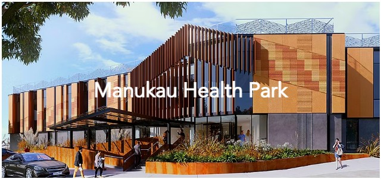

A $300 million live healthcare expansion and redevelopment project, delivered within an operational clinical environment. The works included the integration of new MRI, operating theatres, renal, and X-ray facilities to support the growing healthcare demands of South Auckland.
Responsibilities
- Site Engineer
- Quality Engineer
- Site Supervisor
- Services Co-ordinator
- Document Controller
- Compliance Management